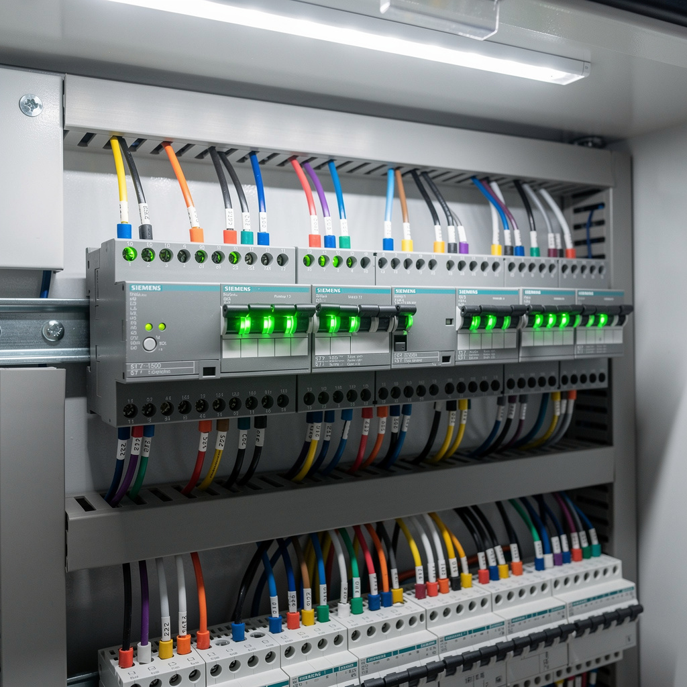
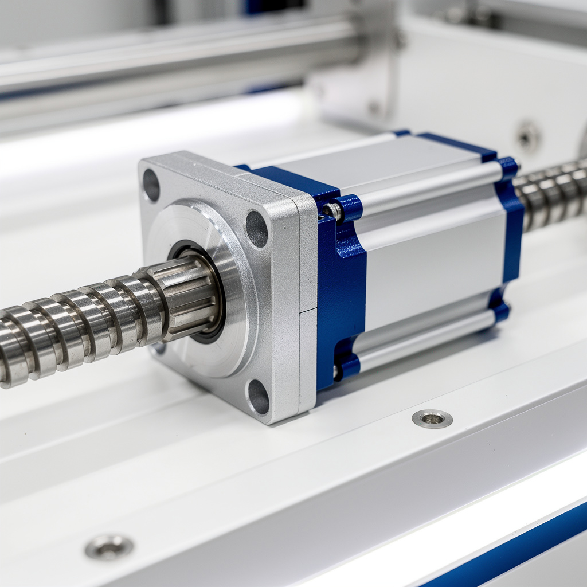

Débogage & optimisation programme automate
// Le Problème
Symptôme : Temps de cycle au chronomètre 28–30 s au lieu des 16–17 s nominaux. Alarme HMI fréquente 'Timeout bras robot zone pick'. Arrêts 3–4 fois par heure. Opérateurs obligés de redémarrer manuellement (~2 min chaque fois).
Impact : capacité effective ~126 pièces/h vs cible 214 pièces/h. OEE cellule 72 %.
// Diagnostic
Connexion en ligne TIA Portal. Monitoring blocs programme.
Temporisation bloc gestion robot = 8 s ; mouvement réel mesuré = 5,5 s → temporisation trop conservative, bloque le cycle.
Bit 'pince OK' : capteur de proximité clignote au lieu d'être fixe. Support desserré (jeu 2 mm) → détection intermittente → programme attend indéfiniment.
Séquencement : phases exécutées en série alors que certaines sont parallélisables (descente + fermeture pince ; montée + translation).



// Solution apportée
// Résultat mesuré
Temps de cycle : 28,5 s → 16,8 s (–41 %). Capacité : ~126 → 214 pièces/h. OEE : 72 % → 84 % (+12 pts). Alarme 'Timeout' : 3–4/h → <1/h. Formation interne réalisée pour maintenance autonome.